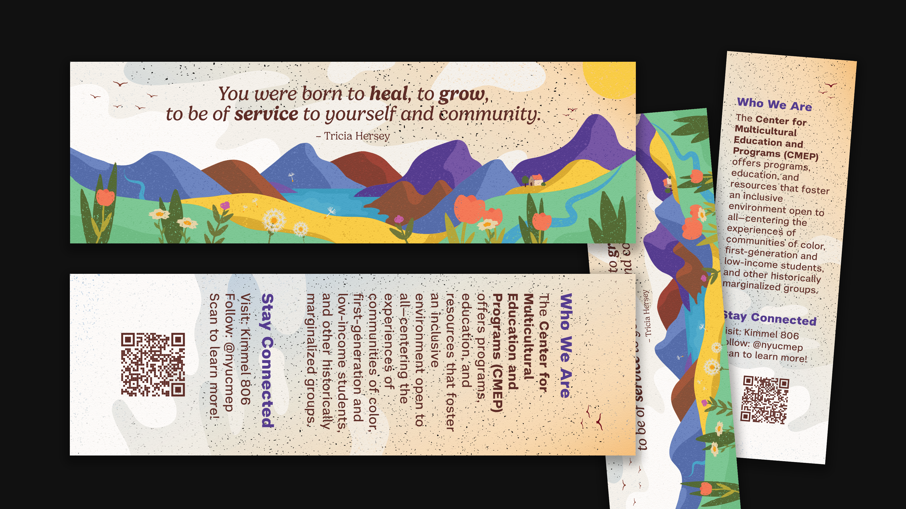
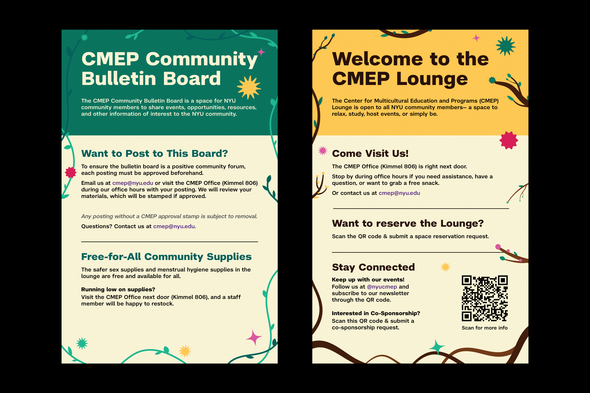

CMEP Prints & Signs
Spring–Summer 2026
Lead Designer
Print, Signage & Illustration
Print is one of several ways NYU's Center for Multicultural Education and Programs (CMEP) communicates its resources, programs, and mission to students and the NYU community.
This series explores how playful design can support that messaging, spanning postcards, signage, and spatial design. Each piece pairs original visuals with the information CMEP needs to share, aiming to make content feel engaging and digestible rather than solely informational.



CMEP Info Materials
The info card and bookmark/sticker set are both introductions to CMEP, designed to catch attention before asking for a read. The info card is a double-sided postcard: an illustrated collage of students and CMEP moments on the front, with office info on the back.
The bookmark and sticker follow the same idea for Fall 2026, built around a quote from Tricia Hersey. Each piece pairs a short description with a QR code, giving people an easy way to learn more once the design has pulled them in.

Lounge Signage
A set of signs for the CMEP Lounge, covering the office, its resources, and how to get involved, from posting on the bulletin board to reserving the space.